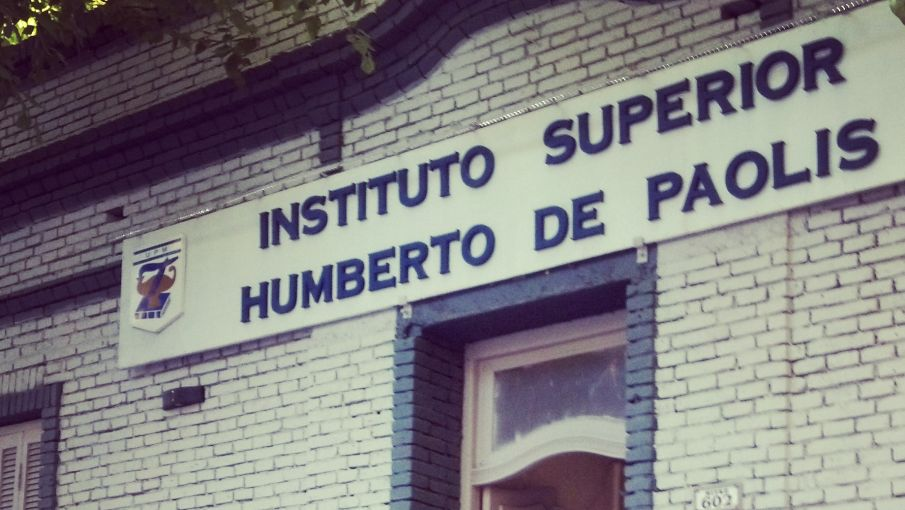

2014-2018: Finalizo mi primer carrera profesional: "Tecnicatura Superior en Comercio Exterior y Aduanas".
Mario Ocampo - Sobre mí
¡Hola! Gracias por visitar este espacio. Aquí comparto mi trayectoria profesional, mi formación académica como Técnico Superior en Programación y los objetivos que me motivan a seguir creciendo en el desarrollo de software.
Historia académica.


2019 - 2024: Decido estudiar programación, ya que fue el area en la que siempre tuve interes, en la Universidad Tecnológica Nacional (UTN). Por motivos laborales no pude continuar asistiendo de forma presencial, como estaba decidido a finalizar mi carrera, opte por continuar mis estudios en otra institución educativa "Instituto Superior Teclab". Finalizando mis estudios en el mes Diciembre del año 2024.
Habilidades Técnicas.

Desarrollo de aplicaciones web y mobile.

Cursos y capacitaciones